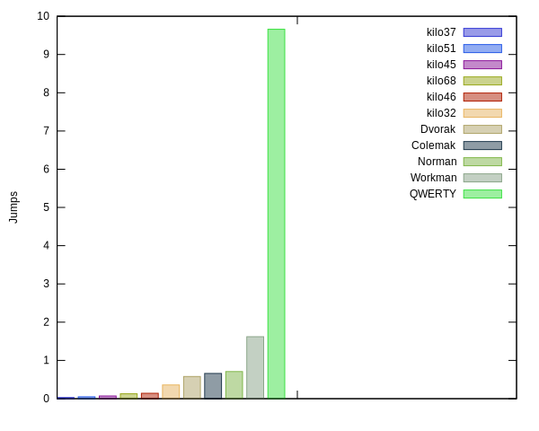

Kilo
A tool to generate, analyze, and compare keyboard layouts.
About
Those who spend a lot of time typing are prone to hand fatigue and
injuries. One of the top reasons for hand injuries has to do
with the keyboard layout that most of us use. QWERTY is not optimized to
minimize hand fatigue but since it is so prevalent we rarely consider
other options. There is a considerable time and effort investment in switching
to a new layout, but even when we decide to do so, we need a way to compare
existing layouts. kilo is a tool to help you decide which layouts are better
and more suited to your style and preferences. Not just that, but you can
create your own custom layout that caters to your needs. There are a lot
of different views on what makes a good layout, this tool, like other
tools, takes sides and follows a certain philosophy. But you can
customize it in many ways using configuration files in addition to user
SQL statements and scoring scripts. Still, before you embark on
designing your own layout, or selecting one from what is available. You
should decide on which factors are more important in a layout
and the weights to assign these factors.
Here is a digram showing how poor the QWERTY layout is with respect to one factor, row jumps:

Take a look at Philosophy.
Features
- Evaluates keyboard layouts.
- Generates keyboard layouts.
- Can generate layouts faster if fast filter is generated.
- Optimizes keyboard layouts.
- User can use custom
sqlto query layout data - User can customize internal scoring function using a config file.
- User can use their own corpus (plain text or compressed
gz/zstd). - Generates
svgdiagrams of keyboard layouts. - Generates
xkbconfig for keyboard layouts. - Generates typing lessons short/long.
- Generates charts for visual comparison between layouts.
Installation
Get from https://github.com/tghaleb/kilo.
To build you need to have crystal installed on your system. In addition to
sqlite and zstd.
make release
copy bin/kilo anywhere on you path and use it from there. kilo has
been developed and tested on Linux.
Quick Start
You will find a bundled fast filter for liep for a delta up to 0.1 and an alternation minimum up to 0.67. You can use this directly if you want to save some time.
data/bigrams.eng_web_2014_1M-sentences.txt.yml.zst
Also bigrams config for lip you can import directly.
kilo init my-project
cd my-project
Edit config/config.yaml and set path of corpus to use.
kilo freq -f data/bigrams.eng_web_2014_1M-sentences.txt.yml.zst
kilo gen -f data/fast.eng_web_2014_1M-sentences.txt.yml
kilo gen --best 10 > top.txt
kilo improve --layouts top.txt --out top.db --limit 5 sql/improve_*
kilo query top.db --sql sql/by_hand.sql --limit 100 | less
kilo query top.db --sql sql/by_hand.sql --limit 100 --layouts | head -n 3 > candidates.txt
kilo export --create-templates candidates.txt
kilo export --xkb --image --type maps/*.yaml
Usage and Workflow
First you initialize a project with
kilo init my-project
cd my-project
This will create the directory my-project with default directory
structure and copy config files to it.
Download a corpus to use. https://wortschatz.uni-leipzig.de/en/download/
has some good ones, or get one from somewhere else. After downloading it
you will want to clean it. Edit config/config.yaml
for your project and set the path to your corpus.
To perform frequency analysis on your corpus,
kilo freq
kilo freq -a
It should create .kilo/corpus.messagpack. The -a option will
print the frequency data for you to inspect.
You can also, skip downloading a corpus and import the frequency data
from a bigrams file like the one provided in your data/ directory.
kilo freq -f path-to-bigrams-file
Now you're ready to do some work, Assuming you want to create your own layout using default settings
kilo gen
This will take some time to generate the 600+ mil combinations of left
and right characters. Here we are only looking for the best alternation
and therefore are not trying to order the keys on each side, just to
weed out unbalanced layouts, balance_deta: key in config.yaml and to
select layouts between alternation_min: and alternation_max:. To
speed it up look at the tip about working on a fast disk. Once
done, you can export fast filter data,
kilo gen -e > fast_filter.yaml
Now if you decided to generate this data again with the same settings for any reason, you can run
kilo gen --fast path-to-fast-filter
and it will be somewhat faster.
To get the generated layouts,
kilo gen --best 100 > top100.txt
the best 100 layouts in terms of alternation, but they are not optimized in any other way so you need to improve them,
kilo improve --layouts top100.txt --out \
top100.db --limit 5 sql/improve-*
This will improve the left and right side of the layout. It does this
by placing the characters according to the least positional effort and then
trying all permutations that yield the same effort score in addition to
some smart brute-forcing. This is a slow
process and mostly done in memory. Best layouts from left/right databases
are combined into the final layouts. The limit is used
with each SQL select.
kilo query top100.db --limit 50 --sql sql/by-score.sql | less
You can then query selecting the ones you like. By score or other
criteria. Note that score is only to give an indication so you will
either want to tweak the scoring weights/config or base your selections
on your sql statements. Also, note that config.yaml has an
improve_config with values that effect how improve behaves so try
different combinations there to get what the results you want.
kilo query top100.db --limit 10 --sql sql/by-hand.sql --layouts >
top100-hand.txt
and compare them together,
kilo eval top100-hand.txt --out top100-hand.db --score
scripts/score.rb
kilo compare top100-hand.db
To export SVG, xkb config and typing lessons
kilo export -T top100-outwards.txt
kilo export -tmix maps/*.yaml
Tips
Fast disk
When doing operations with heavy disk usage, database writes, etc. You
will probably want to be working on a fast disk. For example, on Linux
you can work on a memory disk, and then copy the data back afterwards.
Scoring
By default kilo comes with a built in scorer that you can configure
by edition data/default_scorer.yaml. If you make changes in the configuration
and want to score again, use query with --score option and it will
update the scores.
SQL
The provided SQL files are only examples of what you can do. You will probably need to change them at one point, or add your own custom ones.
Improving layouts
We only do optimization for 32 keys, the reason for this is optimizing beyond this will have very little effect, if any, on the final results. The frequency ratio of the 1st to the 32nd character is about 51:1. Also, we use bitmaps that are 32bits long to do some operations. But after you come up with the best 32 key layout, you can edit the yaml template for the layout and add the rest of the characters manually.
When improving weights matter but not too much. The way optimization works is to calculate permutations for each group of keys of the same weight first to come-up with a reasonable base-line layout. The do some brute forcing trying to find good stats for layouts. All work is done in memory, so it will use a considerable amount of memory.
When improving a limit of 5 is usually enough.
kilo improve --layouts best.txt --limit 5 sql/improve* -o improved.db
Improvement is a slow process and is configured by improve_config key
in your config.yaml file.
Alternation
Alternation is important. Layouts with higher alternation seem to outperform others. You can experiment with this but the top 100 alternation scores are usually the best candidates for improvements.
Corpi
Instead of using a corpus you can import a bigram yaml file that is
already available. See the data/ directory for using one of the
provided ones.
Fast generation
It is a good idea to do
kilo gen --export-fast > fast.yml
and save that fast.yml file with your project in case you want to
generate again with the same settings and using the same corpus. A
fast.yml is provided in your data directory or you decide to use
default settings.
Various
-
Characters in config need to be 32 characters long
-
You might sometimes get too many open files error on
Linux, try
ulimit -n 97816
You can also edit /etc/security/limits.conf and add
* hard nofile 97816
* soft nofile 97816
Resources
- https://wortschatz.uni-leipzig.de/en/download/
- https://en.wikipedia.org/wiki/Keyboard_layout
- https://en.wikipedia.org/wiki/Arabic_keyboard